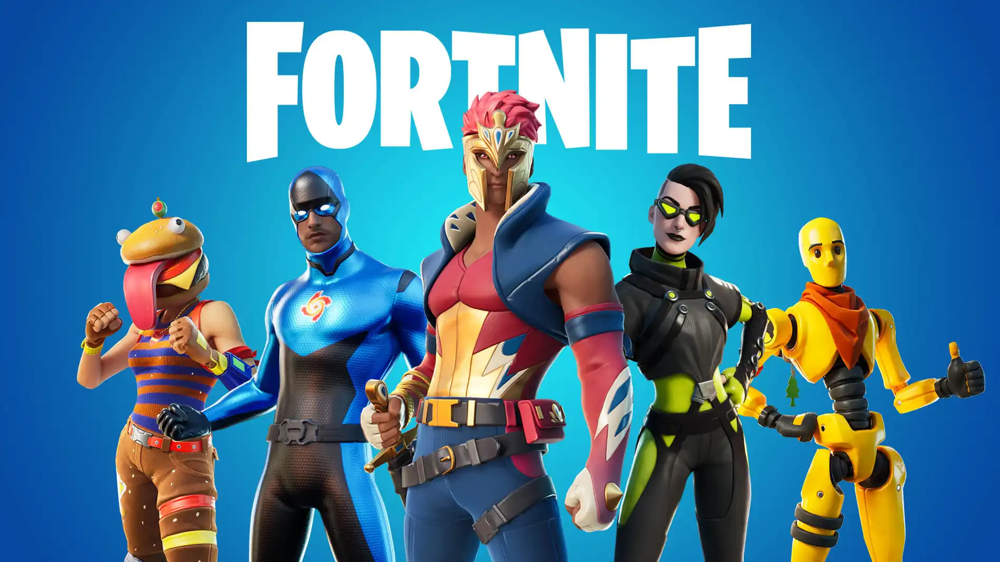
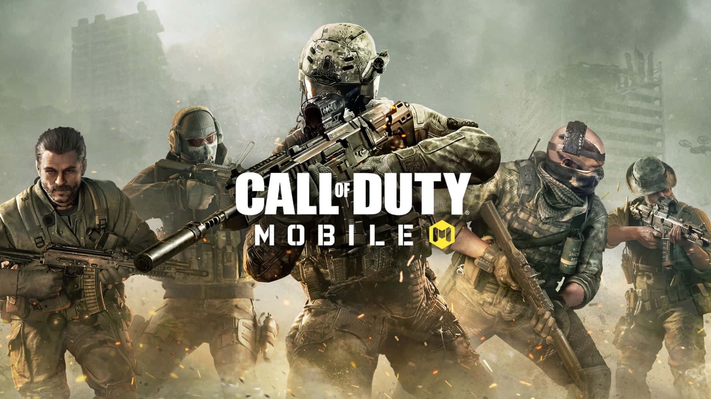
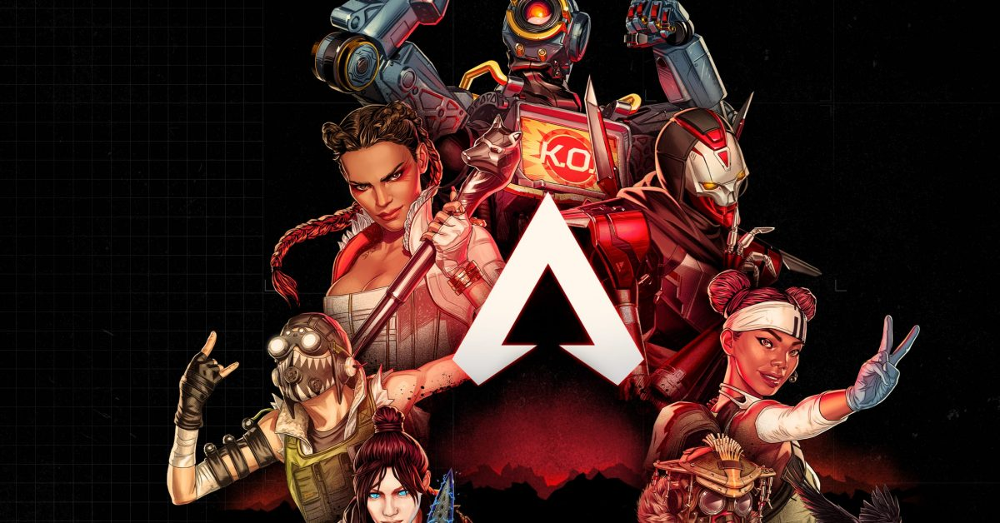
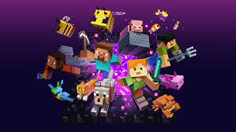
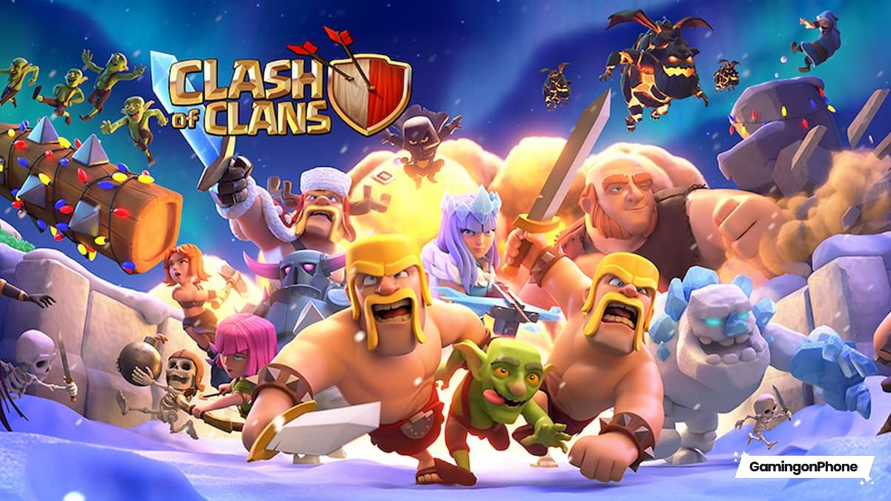
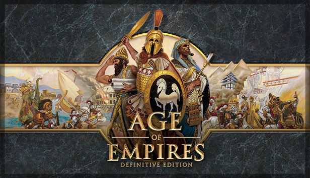
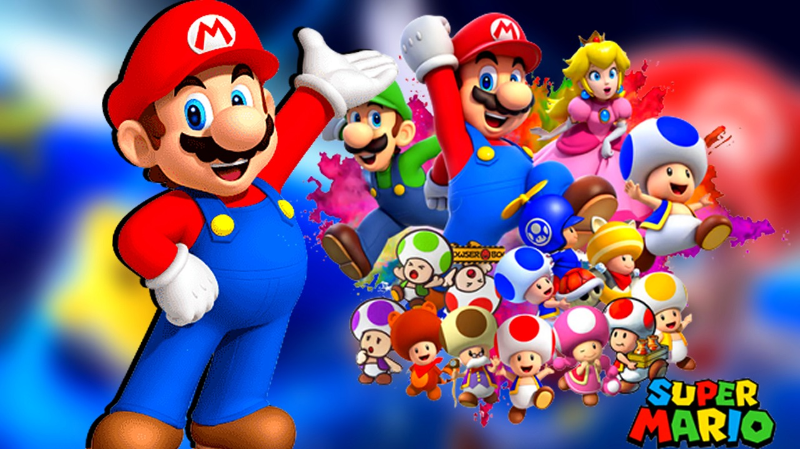
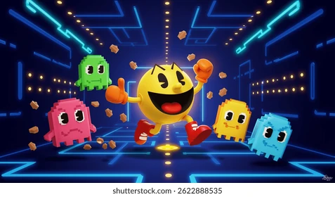

Los videojuegos se han convertido en una de las formas de entretenimiento más populares y dinámicas del mundo actual. Desde sus inicios con gráficos simples y mecánicas básicas, hasta las complejas experiencias inmersivas de hoy en día, los videojuegos han evolucionado de manera impresionante, combinando tecnología, creatividad y narrativa en una sola experiencia interactiva.
En esta página encontrarás un espacio dedicado a explorar el fascinante universo gamer, donde la diversión no tiene límites. Aquí podrás descubrir información sobre los videojuegos más populares, conocer distintos géneros como acción, aventura, deportes, estrategia y muchos más.
Además, los videojuegos no solo ofrecen entretenimiento, sino que también fomentan habilidades importantes como la toma de decisiones, el trabajo en equipo, la creatividad y la resolución de problemas. Hoy en día, incluso se han convertido en una forma de competencia profesional a través de los eSports, donde jugadores de todo el mundo demuestran su talento.
Nuestro objetivo es brindarte contenido interesante, actualizado y fácil de entender, para que puedas conocer más sobre este apasionante mundo, ya seas un jugador experimentado o alguien que recién comienza.
Prepárate para sumergirte en una experiencia llena de emoción, retos y diversión sin límites.
Juegos populares
Algunos de los juegos más populares incluyen:
🔫 Battle Royale
Fortnite - Juego de batalla real

Call of Duty - Acción y disparos

Apex Legends - Juego en equipo con habilidades únicas.

⚽Deportes
FIFA: El más popular de fútbol.
eFootball: Alternativa gratuita.
NBA 2K: Simulación de baloncesto.
🧠 Estrategia y Construcción
Minecraft: Construcción y creatividad infinita.

Clash of Clans: Estrategia en celular.

Age of Empires: Guerra y civilizaciones.

👾 Juegos clásicos
Super Mario Bros.

Pac-Man

Tetris
Noticias
🎮 Lanzamientos recientes
El mundo de los videojuegos está en constante evolución, y cada año se presentan nuevos títulos que sorprenden a los jugadores con gráficos mejorados, historias más profundas y mecánicas innovadoras. Los lanzamientos recientes incluyen juegos de acción, aventura, deportes y mundo abierto que buscan ofrecer experiencias únicas. Además, muchas empresas anuncian fechas de estreno y avances (trailers) que generan gran expectativa en la comunidad gamer. Estar al tanto de los nuevos lanzamientos permite a los jugadores descubrir nuevas experiencias y disfrutar de lo último en tecnología y entretenimiento digital.
🔥 Actualizaciones y novedades
Muchos videojuegos populares reciben actualizaciones constantes que mejoran la experiencia del usuario. Estas actualizaciones pueden incluir nuevos mapas, personajes, armas, modos de juego y eventos especiales. Juegos como Fortnite o Call of Duty: Warzone se mantienen activos gracias a estos cambios frecuentes. Estas mejoras no solo corrigen errores, sino que también mantienen a la comunidad interesada y comprometida con el juego.
💡 Curiosidades y tendencias
El mundo gamer también está lleno de datos interesantes y tendencias que se vuelven virales. Desde récords mundiales hasta secretos ocultos dentro de los juegos, siempre hay algo nuevo por descubrir. Además, tendencias como los juegos en línea, el streaming y la realidad virtual han cambiado la forma en que las personas interactúan con los videojuegos. Estas curiosidades hacen que la experiencia sea aún más interesante y divertida para los jugadores.
🎥 Anuncios y trailers
Los anuncios y trailers son una parte emocionante del mundo de los videojuegos, ya que permiten a los jugadores ver adelantos de los próximos lanzamientos. Estos videos muestran gráficos, historia y jugabilidad, generando gran expectativa. Juegos muy esperados como Grand Theft Auto VI o actualizaciones importantes de Minecraft suelen presentar trailers que rápidamente se vuelven tendencia en internet. Gracias a estos avances, los jugadores pueden decidir qué juegos les interesan antes de su lanzamiento.